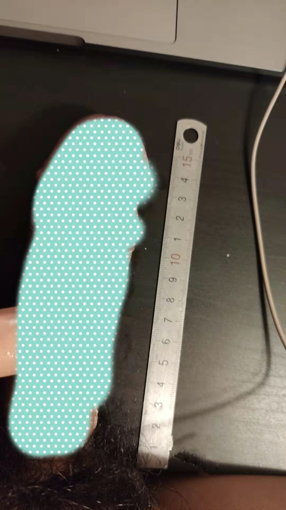

平凡的一天却又不太一样。
矫情
上午去了教务处处理了相关事务，中午回来，把之前那个相片整理完全了。说实在的整理的好累，好多回忆，好多琐碎，怎么说呢，之前感觉自己杂事颇多，所以会发现相册也是越积越多，尤其是为了聊天，存了好多东西，说实在的看看那些图片和聊天截图还是挺怀念之前的那个可爱和我一样逗比的bia，最近的冷漠倒是也让我冷静了下来，情况不太一样了，你也别停滞不前还按老一套了，之前我是想着方法逗她乐，还有经常开些荤段子，现在看来也没啥意思了，没必要，有需求，去硬盘里找找看看不就行了，天天搁那搞黄色擦边球。还有求人家发照片，她那么不乐意，你还求什么啊，搞得自己太卑微了。我发现我是当舔狗当习惯了，之前是觉得值得舔，值得卑微，现在就是觉得何必呢，没必要啊，我也有自己的事，自己的作息，自己的习惯，我平时也是很冷漠的，想说话就说话，没必要搁着强装着自己热情。你忙你的，我忙我的，互不打扰，互相都有空间，可能这就是你所向往的吧，这也是我很习惯的处事方式，但不是我向往的情侣相处节奏。不说这些了，今天也是完全意料之中，一上午一句话都不发，昨天到现在说了四句，我开头，hi，她说在忙，我说ok，三小时后，她说加班中我说ok，又过了几个小时她说吃完烧烤，我说ok，她说睡觉了，我说晚安。今天没有说话，因为我没有开头，我想不出有什么好开头的东西，她这种回复方式和节奏，说什么都没意义，不如不说干自己的事情，你忙你的我忙我的。
OK
今天再次去跑步了，还是老course，3km loop。稍微有点难度，不过还好，今天没有一直走，基本按着 run walk run strategy在锻炼。上下坡时明显感觉不一样，我现在要稍微注意的是接下里去看一下那些跑步姿势教学和安全须知避免伤病和对膝盖的损失。Keep 课程今天也有继续。明日下午两点左右人少去游泳，1km训练。
还有就是今天稍晚归纳了关于data的资源和课程，明天逐步开始看，我这次时间多，全力攻克。
财务问题今天也解决了。说到财务，今天有两个在纠结的事，第一个票订不订，第二个那个飞机杯还买不买，我不喜欢用手撸，可是确实性欲有的时候还是挺强的，要去释放下，价格怎么说呢50刀，和之前那个一样，因为这种是life size，上位很逼真，可以完全模拟。现在麻烦的就是要是买了话就是和之前那个一模一样，之前因为父母来了，怕尴尬，所以给扔了，现在再买，回头怎么处理，这个东西尺寸还是比较大的，感觉飞机托运不太好办。毕竟这种形状要是给安检员看到会给吓一跳哈哈哈。所以也就只能用这几个月。我感觉还是算了吧。有点浪费钱了。就稍微控制一下自己，尽量少接触那些hentai东西。虎扑我已经卸载了，毕竟经常会刷出各种福利图。
然后今天在整理图片的时候有点小硬就去量了下丁丁，发现好像长了不少，之前测量的都是15cm或者不到，今天测的时候已经超出了尺子的长度，到尺子那个圈圈上面，我把圈圈的距离算了下，现在应该16.5cm了。不知道是测量的方法问题还是就是勃起长度变了，哈哈哈，我就说嘛我个子也高，也瘦，丁丁肯定也很长，之前15算是比较长，这次测的那是相当长了，上个马赛克图吧，不然总感觉再吹牛。

说到这里好像已经11点半了，该睡觉了，话说还是去发一句睡觉了，毕竟我看来，半天说句话是个底线，我暂时不想打破这个底线，但是她那里好像不是这样。